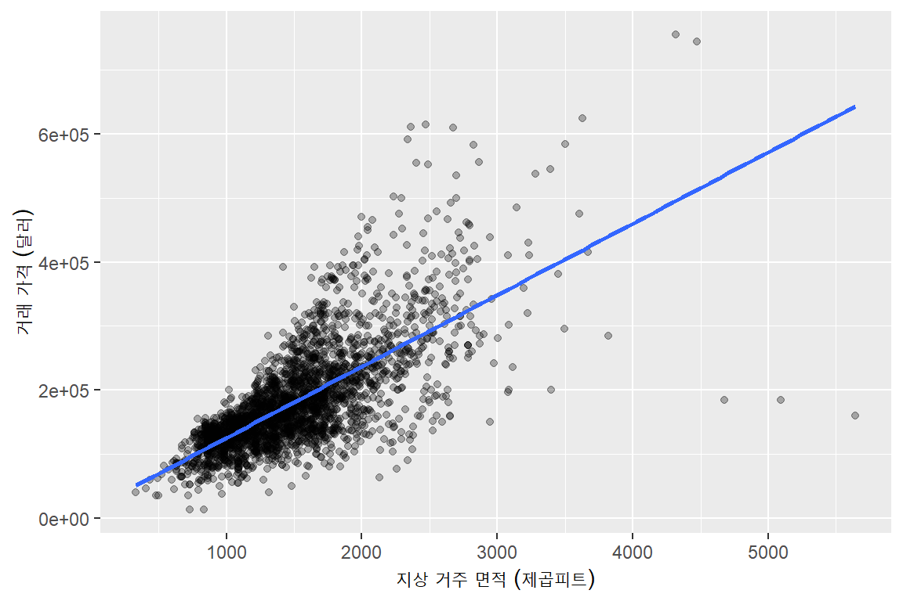
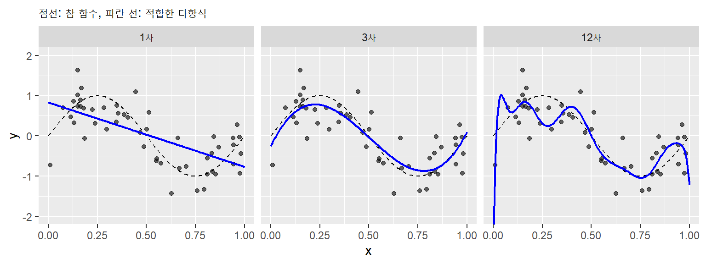
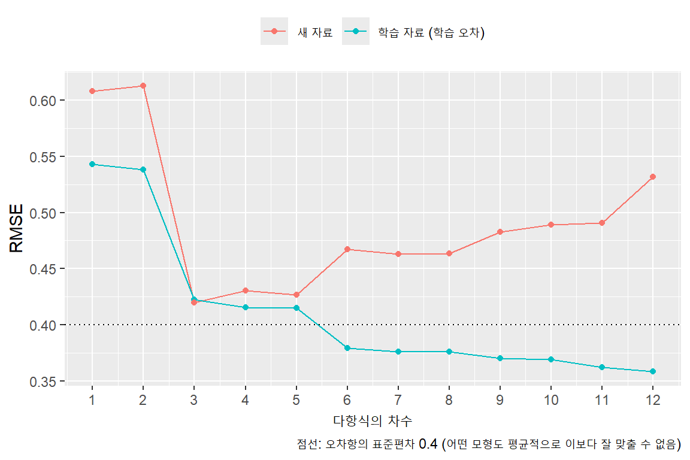
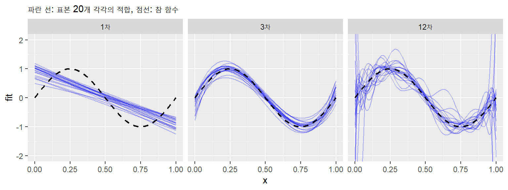
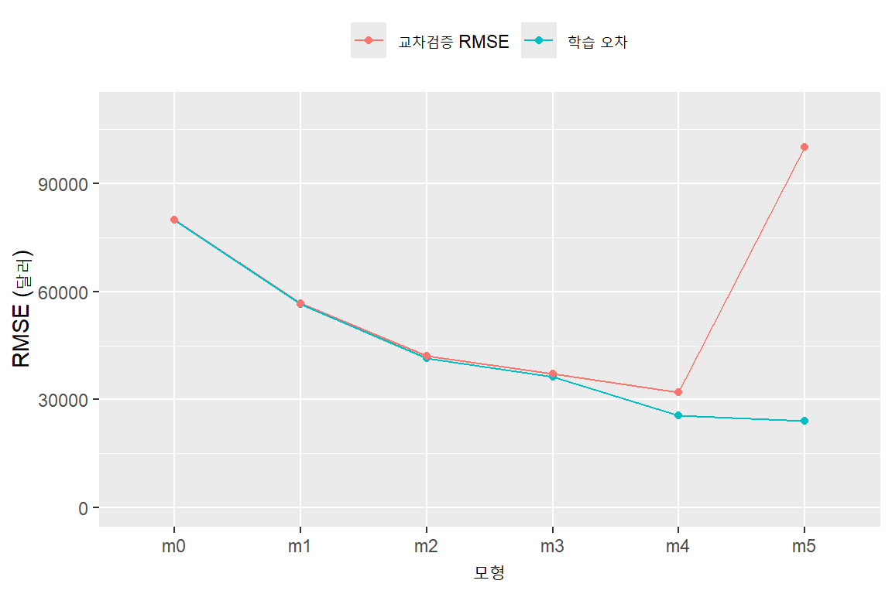

library(tidyverse)
library(janitor)
library(skimr)
library(broom)
library(modeldata) # 이번 주 데이터 (ames)10주차. 예측하기 (1): 연속적 결과 변수
1 도입
- 이번 주의 질문: 회귀분석 모형으로 새로운 관측치를 예측하면 얼마나 틀리는가? 여러 모형 중 어느 것으로 예측해야 하는가?
- 관심의 대상은 계수(coefficient) \(\hat\beta\)가 아니라 예측값(predicted value) \(\hat y\)
- “다른 조건이 같다면 \(x\)가 1 단위 클 때 \(y\)는 평균적으로 얼마나 다른가?” vs “\(x\)를 알 때 \(y\)를 얼마나 정확하게 맞힐 수 있는가?”
- 핵심 아이디어
- 손에 있는 자료를 잘 맞추는 모형이 새 자료도 잘 맞추는 것은 아님
- 예측력은 모형을 만들 때 쓰지 않은 자료로 측정
- 새로 설치할 패키지:
modeldata
2 예측 오차(prediction error)의 측정
2.1 데이터: 미국 Ames 시의 주택 거래
ames: 미국 아이오와주 Ames 시에서 2006~2010년에 거래된 주택 2,930채Sale_Price: 거래 가격 (달러)Gr_Liv_Area: 지상 거주 면적 (제곱피트)Year_Built: 건축 연도Total_Bsmt_SF: 지하 면적 (제곱피트)Garage_Area: 차고 면적 (제곱피트)Neighborhood: 동네 (28개)
- 이 외에도 변수가 70개 넘게 있으나 이번 주에는 위의 변수만 사용
ames |>
select(Sale_Price, Gr_Liv_Area, Year_Built, Total_Bsmt_SF, Garage_Area, Neighborhood) |>
skim()| Name | select(…) |
| Number of rows | 2930 |
| Number of columns | 6 |
| _______________________ | |
| Column type frequency: | |
| factor | 1 |
| numeric | 5 |
| ________________________ | |
| Group variables | None |
Variable type: factor
| skim_variable | n_missing | complete_rate | ordered | n_unique | top_counts |
|---|---|---|---|---|---|
| Neighborhood | 0 | 1 | FALSE | 28 | Nor: 443, Col: 267, Old: 239, Edw: 194 |
Variable type: numeric
| skim_variable | n_missing | complete_rate | mean | sd | p0 | p25 | p50 | p75 | p100 | hist |
|---|---|---|---|---|---|---|---|---|---|---|
| Sale_Price | 0 | 1 | 180796.06 | 79886.69 | 12789 | 129500 | 160000 | 213500.00 | 755000 | ▇▇▁▁▁ |
| Gr_Liv_Area | 0 | 1 | 1499.69 | 505.51 | 334 | 1126 | 1442 | 1742.75 | 5642 | ▇▇▁▁▁ |
| Year_Built | 0 | 1 | 1971.36 | 30.25 | 1872 | 1954 | 1973 | 2001.00 | 2010 | ▁▂▃▆▇ |
| Total_Bsmt_SF | 0 | 1 | 1051.26 | 440.97 | 0 | 793 | 990 | 1301.50 | 6110 | ▇▃▁▁▁ |
| Garage_Area | 0 | 1 | 472.66 | 215.19 | 0 | 320 | 480 | 576.00 | 1488 | ▃▇▃▁▁ |
- 동네 중에는 거래가 아주 적은 곳이 있음
ames |>
count(Neighborhood, sort = TRUE) |>
tail(5)# A tibble: 5 × 2
Neighborhood n
<fct> <int>
1 Northpark_Villa 23
2 Blueste 10
3 Greens 8
4 Green_Hills 2
5 Landmark 1- 거래가 30채 미만인 동네는 “Other”로 묶어 둠 (이유는 아래 교차검증에서 설명)
fct_lump_min(변수, min = 30): 관측치가 30개 미만인 범주를 하나로 묶음
ames <- ames |>
mutate(Neighborhood = fct_lump_min(Neighborhood, min = 30, other_level = "Other"))
ames |>
count(Neighborhood, sort = TRUE) |>
tail(3)# A tibble: 3 × 2
Neighborhood n
<fct> <int>
1 Clear_Creek 44
2 Meadow_Village 37
3 Briardale 302.2 잔차에서 평균제곱근오차(RMSE)로
- 면적만으로 가격을 예측하는 모형
fit_area <- lm(Sale_Price ~ Gr_Liv_Area, data = ames)
tidy(fit_area)# A tibble: 2 × 5
term estimate std.error statistic p.value
<chr> <dbl> <dbl> <dbl> <dbl>
1 (Intercept) 13290. 3270. 4.06 0.0000494
2 Gr_Liv_Area 112. 2.07 54.1 0 ames |>
ggplot(aes(x = Gr_Liv_Area, y = Sale_Price)) +
geom_point(alpha = 0.3) +
geom_smooth(method = "lm", se = FALSE) +
labs(x = "지상 거주 면적 (제곱피트)", y = "거래 가격 (달러)")
- 각 주택마다 잔차(residual) \(e_i = y_i - \hat y_i\)가 하나씩 있음. 잔차 2,930개를 하나의 숫자로 요약하고 싶음
- 그냥 평균을 내면 양수와 음수가 상쇄되어 0이 됨
- 제곱해서 평균을 내고 다시 제곱근을 취함: 평균제곱근오차(RMSE, root mean squared error)
\[ \text{RMSE} = \sqrt{\frac{1}{n}\sum_{i=1}^n (y_i - \hat y_i)^2} \]
- 절댓값의 평균: 평균절대오차(MAE, mean absolute error)
\[ \text{MAE} = \frac{1}{n}\sum_{i=1}^n |y_i - \hat y_i| \]
ames_fit <- ames |>
mutate(pred = predict(fit_area))
ames_fit |>
summarize(rmse = sqrt(mean((Sale_Price - pred)^2)),
mae = mean(abs(Sale_Price - pred)))# A tibble: 1 × 2
rmse mae
<dbl> <dbl>
1 56505. 38535.- 두 지표 모두 단위가 \(y\)와 같음 (여기서는 달러)
- RMSE 약 5만 6천 달러, MAE 약 3만 9천 달러: “면적만으로 예측하면 대략 4만~6만 달러 정도 틀린다”고 읽을 수 있음
- RMSE가 MAE보다 큰 이유: 제곱을 하므로 크게 틀린 관측치가 RMSE를 더 많이 키움
- 이 자료에는 면적이 4,000 제곱피트를 넘는 주택이 5채 있음. 그중 3채는 가격이 아주 낮아 직선에서 크게 벗어남
ames_fit |>
filter(Gr_Liv_Area > 4000) |>
select(Gr_Liv_Area, Sale_Price, pred, Sale_Condition)# A tibble: 5 × 4
Gr_Liv_Area Sale_Price pred Sale_Condition
<int> <int> <dbl> <fct>
1 5642 160000 643467. Partial
2 4476 745000 513232. Abnorml
3 4316 755000 495361. Normal
4 5095 183850 582371. Partial
5 4676 184750 535571. Partial - 이번 주에는 이 주택들을 빼지 않고 그대로 사용함. 새로 예측할 자료에도 이런 주택이 들어올 수 있기 때문
- 이 강의에서는 주로 RMSE를 사용
2.3 기준선(baseline): 평균으로 예측하기
- RMSE가 5만 6천 달러라는 것이 큰지 작은지 판단하려면 비교 대상이 필요함
- 가장 단순한 예측: 모든 주택의 가격을 평균 가격으로 예측
- 이때의 RMSE는 가격의 표준편차와 (거의) 같음
ames |>
summarize(rmse_mean = sqrt(mean((Sale_Price - mean(Sale_Price))^2)),
sd = sd(Sale_Price))# A tibble: 1 × 2
rmse_mean sd
<dbl> <dbl>
1 79873. 79887.- 면적을 이용하면 평균으로 예측할 때보다 RMSE가 약 8만 달러에서 5만 6천 달러로 줄어듦
- 설명변수가 없는 회귀
lm(y ~ 1)의 예측값이 바로 평균임. 아래에서는 이것을 “기준선 모형”으로 사용
lm(Sale_Price ~ 1, data = ames) |>
coef()(Intercept)
180796.1 mean(ames$Sale_Price)[1] 180796.13 과적합(overfitting)
3.1 참 함수(true function)를 아는 자료
- 위의 RMSE는 모형을 추정할 때 쓴 바로 그 자료에서 계산한 값: 학습 오차(training error)
- 모형을 추정하는 데 쓴 자료를 학습 자료(training data)라고 함
- 학습 오차가 작으면 새 자료도 잘 맞출까? 이를 확인하려면 “새 자료”가 있어야 함
- 참 관계를 우리가 정해 두고 자료를 만들어 보자 (시뮬레이션, simulation)
- 참 함수: \(f(x) = \sin(2\pi x)\), \(x\)는 0과 1 사이
- \(x\)가 주어졌을 때 \(y\)의 평균. 계량경제학의 모집단 회귀함수(population regression function)에 해당
- 관측값: \(y = f(x) + \varepsilon\), \(\varepsilon\)은 평균 0, 표준편차 0.4인 정규분포(normal distribution)
- 학습 자료: 50개. 새 자료: 같은 방식으로 만든 1,000개
- 참 함수: \(f(x) = \sin(2\pi x)\), \(x\)는 0과 1 사이
f_true <- function(x) sin(2 * pi * x)
set.seed(2)
sim_train <- tibble(x = runif(50)) |>
mutate(y = f_true(x) + rnorm(50, sd = 0.4))
sim_new <- tibble(x = runif(1000)) |>
mutate(y = f_true(x) + rnorm(1000, sd = 0.4))runif(n): 0과 1 사이의 균등분포(uniform distribution)를 따르는 난수(random number) \(n\)개,rnorm(n, sd = ): 정규분포를 따르는 난수 \(n\)개set.seed(): 난수의 시작점을 고정해 같은 결과가 다시 나오게 함function(x)로 참 함수를 정의한 부분은 이해하지 않아도 됨
3.2 다항식의 차수 높이기
- 직선 대신 \(x\)의 다항식으로 적합: \(\hat y = b_0 + b_1 x + b_2 x^2 + \cdots + b_d x^d\)
lm(y ~ poly(x, d)): \(x\)의 \(d\)차 다항식 회귀(polynomial regression)- 차수(degree) \(d\)가 클수록 곡선이 더 자유롭게 구부러짐
fit_d3 <- lm(y ~ poly(x, 3), data = sim_train)
- 1차: 너무 단순해서 참 함수의 모양을 따라가지 못함
- 3차: 참 함수와 비슷함
- 12차: 학습 자료의 점 50개를 따라가느라 참 함수에는 없는 굴곡이 생김. 점의 우연한 배치(오차 \(\varepsilon\))까지 맞추고 있는 것
3.3 학습 오차와 새 자료의 오차
- 차수를 1에서 12까지 바꾸어 가며 학습 자료의 RMSE(학습 오차)와 새 자료 1,000개의 RMSE를 계산
- 새 자료에서 잰 오차를 평가 오차(test error)라고도 함

- 학습 오차는 차수를 높일수록 계속 줄어듦 (변수를 추가하면 잔차 제곱합은 줄어들 수밖에 없음)
- 새 자료의 오차는 3차 근처에서 가장 작고, 그 뒤로는 다시 커짐 (U자 모양)
- 학습 오차는 0.4보다 작아지기도 함: 오차 \(\varepsilon\)까지 맞추고 있다는 신호
- 학습 자료만 잘 맞추고 새 자료에서는 오히려 더 틀리는 것을 과적합이라고 함
- 결론: 학습 오차로는 모형을 고를 수 없음. 학습 오차만 보면 항상 가장 복잡한 모형을 고르게 됨
3.4 표본이 달라지면 적합도 달라진다
- 같은 참 함수에서 50개짜리 표본(sample)을 20번 새로 뽑아, 각 표본마다 다항식을 적합해 겹쳐 그려 봄

- 1차: 표본이 바뀌어도 곡선이 크게 달라지지 않지만, 모두 같은 방향으로 참 함수에서 벗어나 있음
- 12차: 평균적으로는 참 함수 근처에 있지만, 표본마다 곡선이 크게 흔들림. 특히 양 끝에서
- 3차: 두 문제가 모두 작음
- 너무 단순한 모형은 표본과 상관없이 늘 틀리고, 너무 복잡한 모형은 표본에 따라 크게 틀림. 새 자료의 오차가 U자 모양이 되는 이유
4 한 번 나누기
4.1 학습 자료와 평가 자료
- 현실에서는 많은 경우 참 함수도 모르고 새 자료도 없음
- 대신 주어진 자료를 둘로 나눔
- 학습 자료(training set, 예: 80%): 모형을 추정하는 데만 사용
- 평가 자료(test set, 나머지 20%): 추정에는 쓰지 않고 예측 오차를 재는 데만 사용
- 평가 자료는 모형 입장에서는 “새 자료”와 같은 역할을 함
ames_id <- ames |>
mutate(id = row_number())
set.seed(1)
ames_train <- ames_id |>
slice_sample(prop = 0.8)
ames_test <- ames_id |>
anti_join(ames_train, by = "id")
nrow(ames_train)[1] 2344nrow(ames_test)[1] 586row_number(): 각 행에 1부터 순번을 붙임. 어떤 행이 학습 자료에 들어갔는지 구분하기 위한 번호slice_sample(prop = 0.8): 행의 80%를 무작위로 뽑음anti_join(x, y, by = "id"):x중y에 없는 행만 남김 → 학습 자료에 뽑히지 않은 나머지 20%set.seed(1): 무작위 추출의 시작점을 고정. 같은 숫자를 넣으면 몇 번을 실행해도 같은 행이 뽑힘
4.2 평가 자료로 RMSE 계산하기
- 학습 자료로 추정하고, 평가 자료에
predict()
fit_tr <- lm(Sale_Price ~ Gr_Liv_Area, data = ames_train)
ames_test |>
mutate(pred = predict(fit_tr, newdata = ames_test)) |>
summarize(test_rmse = sqrt(mean((Sale_Price - pred)^2)))# A tibble: 1 × 1
test_rmse
<dbl>
1 55817.- 동네를 추가한 모형과 비교
fit_tr3 <- lm(Sale_Price ~ Gr_Liv_Area + Year_Built + Total_Bsmt_SF + Garage_Area + Neighborhood,
data = ames_train)
ames_test |>
mutate(pred = predict(fit_tr3, newdata = ames_test)) |>
summarize(test_rmse = sqrt(mean((Sale_Price - pred)^2)))# A tibble: 1 × 1
test_rmse
<dbl>
1 33036.4.3 한 번 나누기의 한계
set.seed()의 숫자를 바꾸면 다른 행이 평가 자료에 들어가므로 결과가 달라짐- seed를 1부터 10까지 바꾸어 두 모형의 평가 자료 RMSE를 계산하면
# A tibble: 10 × 3
seed area_only with_neighborhood
<int> <dbl> <dbl>
1 1 55817 33036
2 2 56385 35640
3 3 58312 36757
4 4 58639 37530
5 5 57302 37143
6 6 58518 41051
7 7 49867 30797
8 8 55830 33472
9 9 58364 36587
10 10 53841 33339- 같은 모형인데도 어떤 주택이 평가 자료에 들어갔느냐에 따라 RMSE가 많게는 1만 달러 가까이 달라짐
- 특히 면적이 아주 큰 주택 몇 채가 평가 자료에 들어가느냐에 따라 크게 흔들림
- 또 하나의 한계: 자료의 20%는 모형을 추정하는 데 쓰지 못함
5 k-겹 교차검증(k-fold cross-validation)
5.1 아이디어
- 자료를 5개의 묶음(겹, fold)으로 나눔
- 1번 겹을 평가 자료로, 나머지 4개 겹을 학습 자료로 사용해 1번 겹의 오차 제곱의 평균(평균제곱오차, MSE: mean squared error)을 계산
- 2번 겹을 평가 자료로, 나머지를 학습 자료로 사용해 2번 겹의 MSE 계산
- … 5번 겹까지 반복한 뒤, MSE 5개를 평균하고 제곱근을 취함: 교차검증 RMSE
- 결국 모든 관측치의 평가 오차를 모아 RMSE를 한 번 계산하는 것과 같음
- 모든 관측치가 한 번씩 평가 자료가 되고, 네 번씩 학습 자료가 됨
- 한 번 나누기보다 결과가 덜 흔들리고, 자료를 버리지 않음
- 5겹이면 5-겹 교차검증, 일반적으로 k-겹 교차검증
5.2 겹 번호 붙이기
set.seed(1)
ames_cv <- ames |>
mutate(fold = sample(rep(1:5, length.out = n())))
ames_cv |>
count(fold)# A tibble: 5 × 2
fold n
<int> <int>
1 1 586
2 2 586
3 3 586
4 4 586
5 5 586rep(1:5, length.out = n()): 1, 2, 3, 4, 5, 1, 2, …를 행의 수만큼 반복sample(): 그 순서를 무작위로 섞음 → 각 주택에 무작위로 1~5의 겹 번호가 붙음
5.3 for 루프
- 같은 작업을 되풀이하는 코드를 반복문(loop)이라고 함
- 같은 작업을 겹 번호만 바꾸어 다섯 번 해야 함
for (k in 1:5) { ... }:k에 1, 2, 3, 4, 5를 차례로 넣으면서{ }안의 코드를 반복
for (k in 1:3) {
print(k * 10)
}[1] 10
[1] 20
[1] 30- 반복할 때마다 나오는 결과를 저장할 빈 그릇을 미리 만들어 둠
squares <- numeric(3) # 0이 3개 들어 있는 벡터
for (k in 1:3) {
squares[k] <- k^2 # k번째 자리에 결과를 저장
}
squares[1] 1 4 95.4 모형 하나의 교차검증
mse_k <- numeric(5)
for (k in 1:5) {
cv_train <- ames_cv |> filter(fold != k) # k번 겹을 뺀 나머지
cv_test <- ames_cv |> filter(fold == k) # k번 겹
fit <- lm(Sale_Price ~ Gr_Liv_Area, data = cv_train)
pred <- predict(fit, newdata = cv_test)
mse_k[k] <- mean((cv_test$Sale_Price - pred)^2)
}
sqrt(mse_k) # 겹별 RMSE[1] 56311.57 51232.58 62869.14 55276.83 56968.97sqrt(mean(mse_k)) # 교차검증 RMSE[1] 56655.61- 겹마다 RMSE가 다르고, 겹별 MSE를 평균해 제곱근을 취한 값이 이 모형의 교차검증 RMSE
- 처음에 동네를 30채 기준으로 묶어 둔 이유
- 거래가 1채뿐인 동네(Landmark)가 있었음. 이 주택이 평가 겹에 들어가면 학습 자료에는 그 동네가 하나도 없음
- 학습 자료에 없던 범주는 예측할 수 없으므로
predict()가factor Neighborhood has new levels오류를 냄
5.5 여러 모형 비교하기
- 비교할 모형
| 이름 | 설명변수 | 계수의 수 |
|---|---|---|
m0 |
없음 (평균으로 예측, 기준선) | 1 |
m1 |
면적 | 2 |
m2 |
+ 건축 연도, 지하 면적, 차고 면적 | 5 |
m3 |
+ 동네 | 26 |
m4 |
연속 변수 4개의 2차 다항식을 동네마다 다르게 (* Neighborhood) |
약 200 |
m5 |
연속 변수 4개의 3차 다항식을 동네마다 다르게 | 약 290 |
m4,m5의(...) * Neighborhood는 교호작용(interaction): 괄호 안의 각 항의 기울기와 곡률이 동네마다 다르도록 함- 여러 개의 식을 리스트(list)로 묶어 두고(
list()), 바깥 루프로 모형을, 안쪽 루프로 겹을 바꿈
models <- list(
m0 = Sale_Price ~ 1,
m1 = Sale_Price ~ Gr_Liv_Area,
m2 = Sale_Price ~ Gr_Liv_Area + Year_Built + Total_Bsmt_SF + Garage_Area,
m3 = Sale_Price ~ Gr_Liv_Area + Year_Built + Total_Bsmt_SF + Garage_Area + Neighborhood,
m4 = Sale_Price ~ (poly(Gr_Liv_Area, 2) + poly(Year_Built, 2) +
poly(Total_Bsmt_SF, 2) + poly(Garage_Area, 2)) * Neighborhood,
m5 = Sale_Price ~ (poly(Gr_Liv_Area, 3) + poly(Year_Built, 3) +
poly(Total_Bsmt_SF, 3) + poly(Garage_Area, 3)) * Neighborhood
)
cv_result <- tibble(model = names(models),
train_rmse = NA, cv_rmse = NA, r2 = NA, adj_r2 = NA)
for (j in 1:length(models)) {
# (1) 전체 자료로 추정한 학습 오차와 R제곱 (비교용)
fit_all <- lm(models[[j]], data = ames_cv)
cv_result$train_rmse[j] <- sqrt(mean(residuals(fit_all)^2))
cv_result$r2[j] <- glance(fit_all)$r.squared
cv_result$adj_r2[j] <- glance(fit_all)$adj.r.squared
# (2) 5-겹 교차검증
mse_k <- numeric(5)
for (k in 1:5) {
cv_train <- ames_cv |> filter(fold != k)
cv_test <- ames_cv |> filter(fold == k)
fit <- lm(models[[j]], data = cv_train)
pred <- predict(fit, newdata = cv_test)
mse_k[k] <- mean((cv_test$Sale_Price - pred)^2)
}
cv_result$cv_rmse[j] <- sqrt(mean(mse_k))
}
cv_result |>
mutate(across(c(train_rmse, cv_rmse), round),
across(c(r2, adj_r2), \(x) round(x, 3)))# A tibble: 6 × 5
model train_rmse cv_rmse r2 adj_r2
<chr> <dbl> <dbl> <dbl> <dbl>
1 m0 79873 79891 0 0
2 m1 56505 56656 0.5 0.499
3 m2 41385 42059 0.732 0.731
4 m3 36203 37269 0.795 0.793
5 m4 25608 31923 0.897 0.89
6 m5 24030 100211 0.909 0.9 models[[j]]: 리스트의j번째 식을 꺼냄m5를 추정할 때 경고 메시지(prediction from rank-deficient fit)가 나올 수 있음: 계수가 너무 많아 일부 계수를 추정할 수 없다는 뜻
cv_result |>
pivot_longer(c(train_rmse, cv_rmse), names_to = "type", values_to = "rmse") |>
mutate(type = if_else(type == "train_rmse", "학습 오차", "교차검증 RMSE")) |>
ggplot(aes(x = model, y = rmse, color = type, group = type)) +
geom_line() +
geom_point() +
coord_cartesian(ylim = c(0, 110000)) +
labs(x = "모형", y = "RMSE (달러)", color = NULL) +
theme(legend.position = "top")
- 학습 오차는 모형이 복잡해질수록 계속 줄어듦 (과적합 절의 그림과 같음)
- 교차검증 RMSE는
m4까지 줄어들다가m5에서 크게 커짐m4: 동네마다 기울기와 곡률을 다르게 해 준 것이 새 자료의 예측에도 도움이 됨. 복잡하다고 항상 나쁜 것은 아님m5: 학습 오차는 가장 작지만 새 자료에서는m3보다 못하고, 평균으로 예측한 기준선(m0)보다도 못함. 과적합m5의 교차검증 RMSE는 몇몇 주택에 대한 아주 엉뚱한 예측에 좌우됨.
- 교차검증 RMSE가 가장 작은
m4를 고름- 복잡한 모형이 좋은지 나쁜지는 미리 정해져 있지 않음. 교차검증이 판정함
5.6 \(R^2\)와 조정된 \(R^2\)로는 고를 수 없는가?
- 계량경제학에서는 모형을 비교할 때 결정계수 \(R^2\)(coefficient of determination)나 조정된 \(R^2\)(adjusted \(R^2\))를 보는 경우가 많음
- \(R^2\)는 학습 오차를 다른 방식으로 쓴 것
\[ R^2 = 1 - \frac{(\text{모형의 학습 RMSE})^2}{(\text{기준선 모형의 RMSE})^2} \]
- 예:
m1은 \(1 - (56{,}505 / 79{,}873)^2 \approx 0.50\) - 따라서 학습 오차와 같은 문제가 있음: 변수를 추가하면 \(R^2\)는 줄어들지 않으므로 항상 가장 복잡한 모형을 고르게 됨
- 조정된 \(R^2\)는 계수가 늘어날수록 벌점을 주어 이 문제를 줄이려는 지표
\[ \text{조정된 } R^2 = 1 - (1 - R^2)\frac{n - 1}{n - k} \quad (k: \text{절편을 포함한 계수의 수}) \]
- 위 표에서 조정된 \(R^2\)가 가장 큰 모형은
m5: 교차검증으로는 기준선보다도 못한 모형 - 과적합 절의 시뮬레이션에서도 조정된 \(R^2\)는 6차 모형에서 가장 크지만, 새 자료의 오차는 3차 근처에서 가장 작았음
- 조정된 \(R^2\)의 벌점은 새 자료에서의 오차를 직접 잰 것이 아니므로, 예측 모형을 고르는 기준으로는 충분하지 않음
- \(R^2\)는 “이 자료에서 \(y\)의 변동이 얼마나 설명되는가”를 요약하는 숫자로서는 여전히 유용함
5.7 고른 모형으로 예측하기
- 모형을 고를 때: 교차검증 RMSE를 비교
- 실제로 예측할 때: 고른 모형을 전체 자료로 다시 추정해서 사용 (교차검증의 각 겹에서 추정한 모형이 아님)
fit_final <- lm(models[["m4"]], data = ames)
new_house <- tibble(Gr_Liv_Area = 1500, Year_Built = 2000,
Total_Bsmt_SF = 1000, Garage_Area = 500,
Neighborhood = "North_Ames")
predict(fit_final, newdata = new_house) 1
173213.8 - 이 모형의 예측 정확도로 보고할 숫자는 교차검증 RMSE
- 전체 자료로 추정한 모형의 RMSE(위 표의
train_rmse)는 학습 오차이므로 예측 정확도로 보고하지 않음
- 전체 자료로 추정한 모형의 RMSE(위 표의
5.8 주의할 점
- 같은 단위가 반복되는 자료는 무작위로 겹을 나누는 것이 적절하지 않음
같은 사람이 여러 번 관측된 자료(패널 자료, panel data)를 행 단위로 무작위로 나누면 같은 사람의 자료가 학습 자료와 평가 자료에 모두 들어갈 수 있음
모형은 그 사람을 이미 본 상태에서 예측하는 셈이므로 예측 오차가 실제보다 작게 나올 수 있음
사람 단위로 나누어 한 사람의 모든 관측치가 같은 겹에 들어가게 함
미래를 예측할 때도 무작위로 겹을 나누는 것이 적절하지 않음
- 내년 수출이나 다음 달 주가를 예측하려는 경우에는 과거 자료로 학습하고 그 이후 자료로 평가해야 함
6 정리
| 하고 싶은 일 | 사용할 코드 |
|---|---|
| RMSE | sqrt(mean((y - pred)^2)) |
| MAE | mean(abs(y - pred)) |
| 기준선 모형 (평균으로 예측) | lm(y ~ 1) |
| 다항식 | poly(x, d) |
| 드문 범주 묶기 | fct_lump_min(x, min = 30) |
| 행 번호 | mutate(id = row_number()) |
| 무작위로 80% 추출 | set.seed(1), slice_sample(prop = 0.8) |
| 나머지 행 | anti_join(x, y, by = "id") |
| 겹 번호 | mutate(fold = sample(rep(1:5, length.out = n()))) |
| 반복 | for (k in 1:5) { ... } |
- 예측 모형을 고를 때의 체크리스트
- 오차를 모형 추정에 쓰지 않은 자료로 재었는가?
- 기준선(평균으로 예측)과 비교했는가?
- 학습 오차를 예측 정확도로 보고하지 않았는가?
- 같은 단위가 반복되는 자료라면 단위별로 나누었는가?
7 실습
Important주의사항
마감: 11월 9일 (월) 오후 6시
아래 문제 1에 대한 답안을 작성하고 week10_ex_학번.R과 week10_ex_학번.docx를 E-class로 제출하세요.
위의 분석을 수행하는 데 사용한 코드는 아래 “참고”에 포함되어 있으니 잘 읽어보고 연습한 후 문제에 답변할 때 활용하세요.
- 데이터: klips27p_week10.csv (9,518명)
- 한국노동패널(KLIPS, Korean Labor and Income Panel Study) 27차 조사(2024년)의 임금근로자 중 월평균 임금이 양수이고, 연령·성별·학력·산업·직업이 모두 응답된 사람
- 여러 차수 중 한 차수만 사용하므로 한 사람은 한 번만 들어 있음
| 변수 | 내용 | 값 / 범주 | 원자료 변수 |
|---|---|---|---|
pid |
개인 id | pid |
|
wage |
월평균 임금 (만원) | 15 ~ 6,900 | p271642 |
age |
만 나이 | 18 ~ 94세 | p270107 |
gender |
성별 | Male, Female | p270101 |
education |
최종 학교 (졸업 여부는 구분하지 않음) | Middle or less, High school, College (2yr), University+ | p270110 |
industry |
산업 대분류 (한국표준산업분류 10차) | A Agriculture ~ S Other services (18개), 30명 미만인 대분류(B 광업, T 가구 내 고용, U 국제기관)는 Other | p270342에서 작성 |
occupation |
직업 대분류 (한국표준직업분류 7차) | 1 Managers ~ 9 Elementary, A Military, 30명 미만인 대분류(6 농림어업 숙련)는 Other | p270352에서 작성 |
job_type |
정규직 여부 | Regular, Non-regular (결측 4명) | p270317 |
firm_size |
기업 전체 종업원 수 | Small (1-49), Medium (50-299), Large (300+) (결측 5,124명) | p270403 |
job_type과firm_size는 문제에서 사용하지 않음. 결측이 있어도 표본에서 제외하지 않았음
wage를 예측하는 아래 모형들을 5-겹 교차검증으로 비교하시오. 겹 번호를 붙이기 전에set.seed()에 본인 학번의 마지막 네 자리를 넣으시오.k0:wage ~ 1(기준선)k1:wage ~ agek2:wage ~ age + education + genderk3:wage ~ age + education + gender + industry + occupationk4:wage ~ poly(age, 2) * gender + education + industry + occupationpoly(age, 2) * gender: 연령의 2차 다항식의 계수가 성별마다 다르도록 함 (본문m4의* Neighborhood와 같은 방식)
각 모형의 학습 오차와 교차검증 RMSE를 하나의 표로 정리하시오.
교차검증 RMSE를 기준으로 모형을 하나 고르고, 그 모형의 교차검증 RMSE를 기준선 모형과 비교하여 단위(만원)를 포함해 해석하시오.
학습 오차로 모형을 골랐다면 어떤 모형을 골랐겠는가? 1의 결과에서 학습 오차와 교차검증 RMSE의 차이는 모형에 따라 어떻게 달라지는가?
8 참고
R 스크립트 코드 보기/접기
# =====================================================================
# 1. 환경 준비
# =====================================================================
# install.packages("modeldata") # 처음 한 번만
library(tidyverse)
library(janitor)
library(skimr)
library(broom)
library(modeldata) # ames
# =====================================================================
# 2. 데이터 불러오기
# =====================================================================
# ames는 modeldata 패키지에 포함되어 있으므로 따로 읽을 필요 없음
ames
# 시뮬레이션 자료: 참 함수 f(x) = sin(2 pi x), 오차의 표준편차 0.4
f_true <- function(x) sin(2 * pi * x)
set.seed(2)
sim_train <- tibble(x = runif(50)) |> # 학습 자료 50개
mutate(y = f_true(x) + rnorm(50, sd = 0.4))
sim_new <- tibble(x = runif(1000)) |> # 새 자료 1,000개
mutate(y = f_true(x) + rnorm(1000, sd = 0.4))
# =====================================================================
# 3. 데이터의 특성 파악
# =====================================================================
ames |>
select(Sale_Price, Gr_Liv_Area, Year_Built, Total_Bsmt_SF, Garage_Area, Neighborhood) |>
skim()
ames |>
count(Neighborhood, sort = TRUE)
# =====================================================================
# 4. 데이터 변형
# =====================================================================
# 거래가 30채 미만인 동네를 "Other"로 묶음
ames <- ames |>
mutate(Neighborhood = fct_lump_min(Neighborhood, min = 30, other_level = "Other"))
# =====================================================================
# 5. 시각화
# =====================================================================
ames |>
ggplot(aes(x = Gr_Liv_Area, y = Sale_Price)) +
geom_point(alpha = 0.3) +
geom_smooth(method = "lm", se = FALSE)
# 시뮬레이션 자료와 참 함수
sim_train |>
ggplot(aes(x = x, y = y)) +
geom_point() +
geom_function(fun = f_true, linetype = "dashed")
# =====================================================================
# 6. 모형 추정
# =====================================================================
# ---- 1. 예측 오차 재기 ----
fit_area <- lm(Sale_Price ~ Gr_Liv_Area, data = ames)
ames |>
mutate(pred = predict(fit_area)) |>
summarize(rmse = sqrt(mean((Sale_Price - pred)^2)),
mae = mean(abs(Sale_Price - pred)))
glance(fit_area) |> select(sigma, nobs)
# 기준선: 평균으로 예측
ames |>
summarize(rmse_mean = sqrt(mean((Sale_Price - mean(Sale_Price))^2)))
# ---- 2. 과적합 (시뮬레이션) ----
sim_result <- tibble(degree = 1:12, train = NA, new = NA)
for (d in 1:12) {
m <- lm(y ~ poly(x, d), data = sim_train)
sim_result$train[d] <- sqrt(mean((sim_train$y - predict(m))^2))
sim_result$new[d] <- sqrt(mean((sim_new$y - predict(m, newdata = sim_new))^2))
}
sim_result
sim_result |>
pivot_longer(c(train, new), names_to = "data", values_to = "rmse") |>
ggplot(aes(x = degree, y = rmse, color = data)) +
geom_line() +
geom_point()
# ---- 3. 한 번 나누기 ----
ames_id <- ames |> mutate(id = row_number())
set.seed(1)
ames_train <- ames_id |> slice_sample(prop = 0.8)
ames_test <- ames_id |> anti_join(ames_train, by = "id")
fit_tr <- lm(Sale_Price ~ Gr_Liv_Area, data = ames_train)
ames_test |>
mutate(pred = predict(fit_tr, newdata = ames_test)) |>
summarize(test_rmse = sqrt(mean((Sale_Price - pred)^2)))
# seed를 바꾸어 다시 실행해 보기: set.seed(2), set.seed(3), ...
# ---- 4. 5-겹 교차검증 ----
set.seed(1)
ames_cv <- ames |>
mutate(fold = sample(rep(1:5, length.out = n())))
models <- list(
m0 = Sale_Price ~ 1,
m1 = Sale_Price ~ Gr_Liv_Area,
m2 = Sale_Price ~ Gr_Liv_Area + Year_Built + Total_Bsmt_SF + Garage_Area,
m3 = Sale_Price ~ Gr_Liv_Area + Year_Built + Total_Bsmt_SF + Garage_Area + Neighborhood,
m4 = Sale_Price ~ (poly(Gr_Liv_Area, 2) + poly(Year_Built, 2) +
poly(Total_Bsmt_SF, 2) + poly(Garage_Area, 2)) * Neighborhood,
m5 = Sale_Price ~ (poly(Gr_Liv_Area, 3) + poly(Year_Built, 3) +
poly(Total_Bsmt_SF, 3) + poly(Garage_Area, 3)) * Neighborhood
)
cv_result <- tibble(model = names(models),
train_rmse = NA, cv_rmse = NA, r2 = NA, adj_r2 = NA)
for (j in 1:length(models)) {
fit_all <- lm(models[[j]], data = ames_cv)
cv_result$train_rmse[j] <- sqrt(mean(residuals(fit_all)^2))
cv_result$r2[j] <- glance(fit_all)$r.squared
cv_result$adj_r2[j] <- glance(fit_all)$adj.r.squared
mse_k <- numeric(5)
for (k in 1:5) {
cv_train <- ames_cv |> filter(fold != k)
cv_test <- ames_cv |> filter(fold == k)
fit <- lm(models[[j]], data = cv_train)
pred <- predict(fit, newdata = cv_test)
mse_k[k] <- mean((cv_test$Sale_Price - pred)^2)
}
cv_result$cv_rmse[j] <- sqrt(mean(mse_k))
}
cv_result
# 고른 모형을 전체 자료로 다시 추정해 예측
fit_final <- lm(models[["m4"]], data = ames)
new_house <- tibble(Gr_Liv_Area = 1500, Year_Built = 2000,
Total_Bsmt_SF = 1000, Garage_Area = 500,
Neighborhood = "North_Ames")
predict(fit_final, newdata = new_house)
# =====================================================================
# 7. 결과 저장
# =====================================================================
cv_result |>
write_csv("output/week10_cv_result.csv")
cv_result |>
pivot_longer(c(train_rmse, cv_rmse), names_to = "type", values_to = "rmse") |>
ggplot(aes(x = model, y = rmse, color = type, group = type)) +
geom_line() +
geom_point() +
coord_cartesian(ylim = c(0, 110000))
ggsave("output/week10_cv_result.png", width = 6, height = 4) # 마지막으로 그린 그림